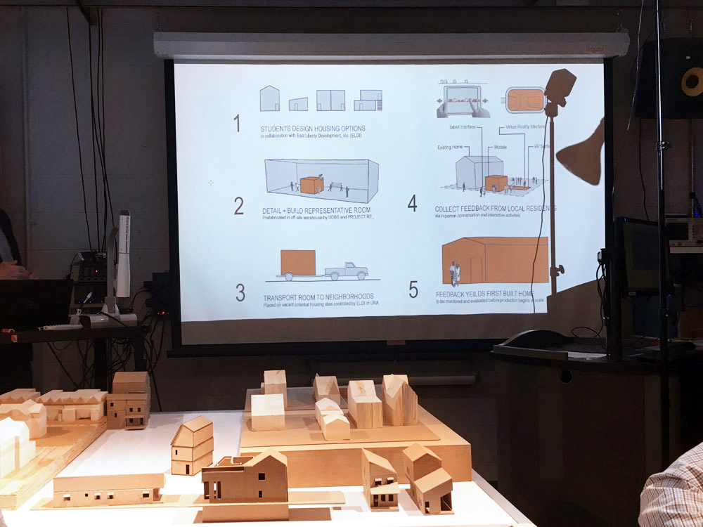
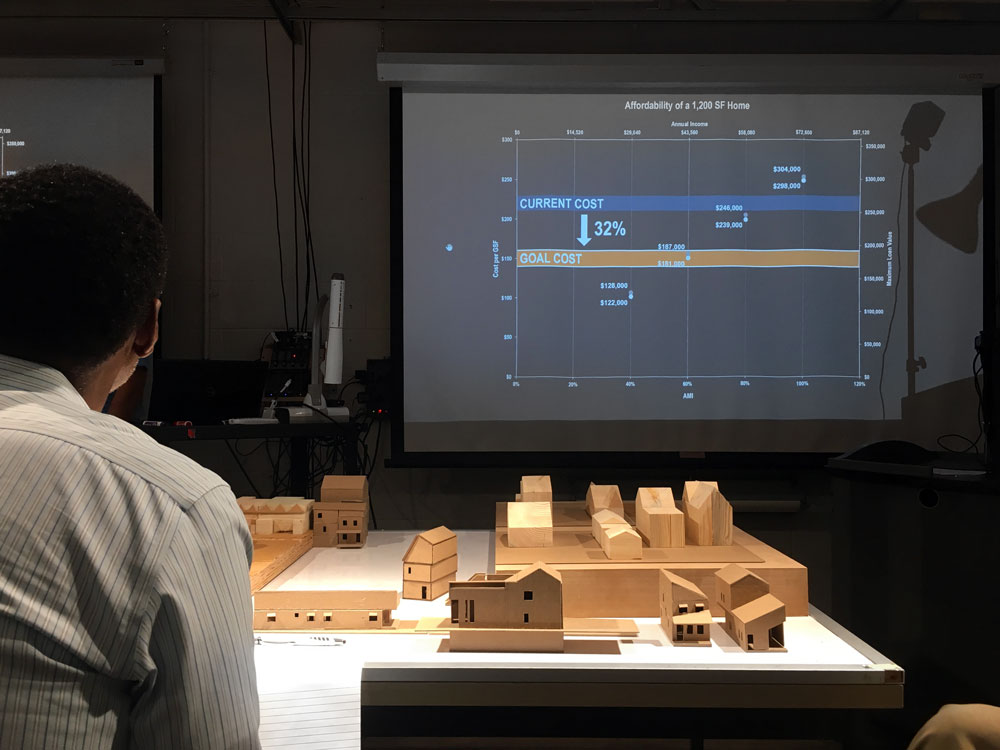
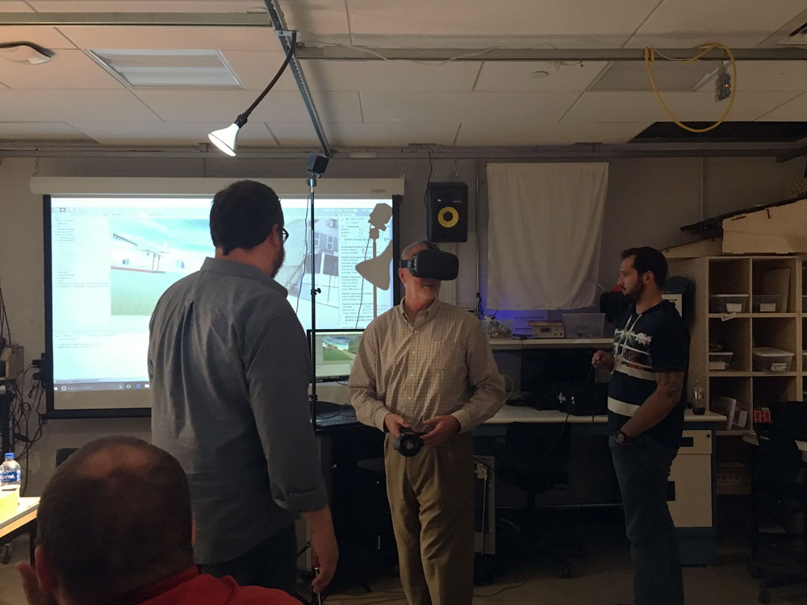
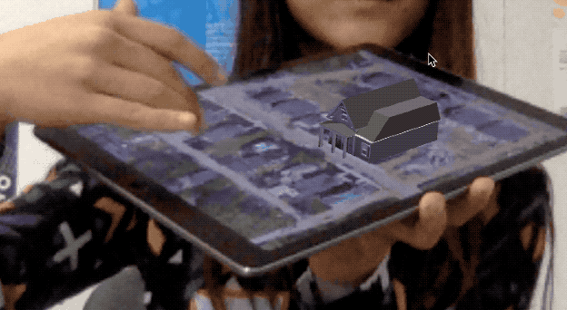
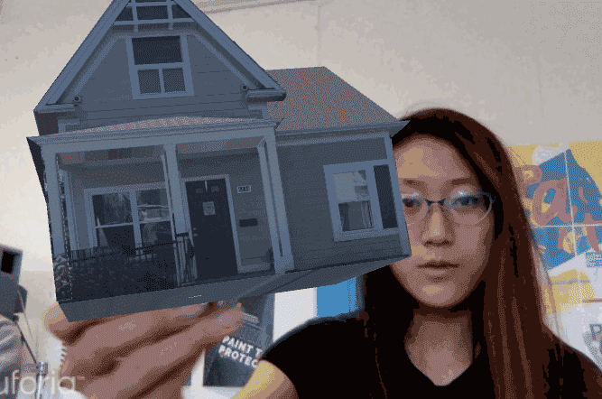

Research + App Dev.
Reality Computing
for Urban Development
Collaborators
Trade Institute of Pitt.
Project RE_
Location Junction
Architecture:
UDBS students
Project Space
Non profit developers handle physical construction
Our Role
The Computing Team:
Reality computing for this project encompasses a constellation of technologies focused around capturing reality (laser scanning, photogrammetry), working with spatial data (CAD, physical modeling, simulation), and using data to interact with and influence the physical world (augmented / virtual reality, projector systems, 3d printing, robotics).
We are working towards applying these technologies to real world problems such as residential design, sustainability, and infrastructure monitoring. My role specifically works towards providing immersive experiences for the residents to involve them within the design process and engender trust within the community.
StoryMap + Research Compilation
Sources:
Pittsburgh Archive
Healthy Ride
US Census, etc
Tools:
ESRI ARCGis
D3.js
Gather relevant information and ARCGIS data sets to best assess site potential. Understand the life of past and current residents, and extrapolate future forecastings. Prepare to present relevant findings to developers, investors, residents, and backers.
In progress interactive data visualization and story map presentation below.
Previous iteration
Context Visualizer
Hardware:
Rico 360 Cam
LIDAR Faro
Software:
Rhino
SketchUp
Revvit
Autodesk Excap, etc
Build VR tool to allow architects to see designs in context, better understand spatial, visual, and environmental factors. (sunlight through the neighborhood, size relationships, etc) Use and experiment with various technologies to refine a pipeline for generating VR environment.
Documentation in progress, resources and references below:
360 photo in Unity Tutorial | Ricoh Theta 360 Cam app | Sketchup Texture Mapping tutorial | Lidar Raw Files | download sketchup for modeling! | sketchup site model from google | possible AWS web to adaptive unity...search CrossoVR on youtube

A lidar scan of the area provided a point cloud dataset that could map out terrain in detail using Autodesk Recap's ReMake. Unfortunately, the information was still too messy to use.

Photogrammed house results weren't of a high enough quality so houses were modeled by hand based off onsite photographs and google earth references

Everything was eventually put into Unity and we played with lighting and wind
Home Incubator Experience
Skills:
Critical thinking
Rapid prototyping
Software:
Unity
AR kit + core
Vuforia
A-Frame
Having figured out different capture technologies and 3D asset generation pipelines, we need to begin to consider why, when, and how they should be used with different technologies for a specific experience? To design for those interactions, we also have to design for the experience we want to give visitors. How do we best convey information? What do we convey and why?
- 
- 
- 

Exploring the use of an interactive, variable marker
- 
Playing with Vuforia reveals some computer vision limitations
- 
Exploring the use of an interactive, variable marker
Augmentation through a 1 dimensional marker glitches out when it's too distorted by angle or glare. Either the computer vision needs to be supplemented with extended tracking and programs to extrapolate position based off previous frames and possible object recognition, or the system around which people would interact/use a 1 dimensional marker needs to be further delibrated.
Another alternative is a multidimensional marker. It would use the same computer vision Vuforia has to offer, but manipulate the virtual 3D augmentation according to the angles and visibility of certain markers in relation to each other.
{kind=link}